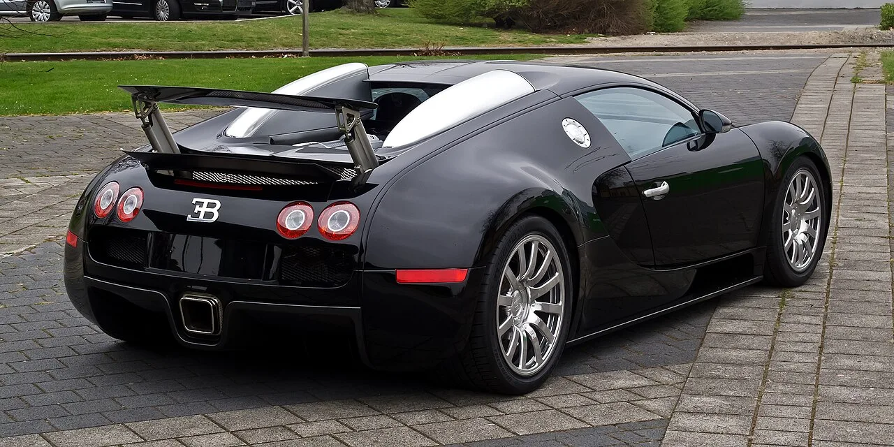
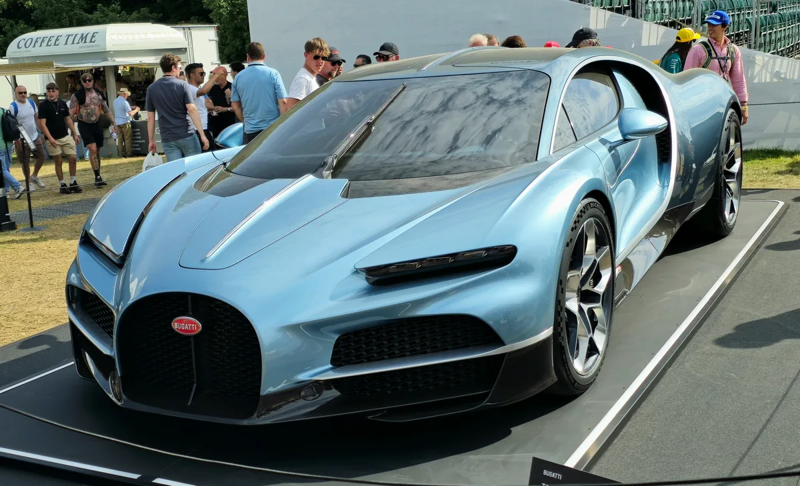

▲ 베이론의 유지비에서 가장 악명 높았던 항목이 타이어였다 ⓒ Wikimedia Commons (CC BY-SA 3.0 DE)
베이론을 살 정도의 사람도 망설이게 만드는 항목이 있었습니다.
타이어입니다.
한 세트에 약 4만 2,000달러. 그런데 이 숫자가 3,596달러로 내려갈 수 있게 됐습니다. 조건이 하나 붙습니다.
1. PAX 타이어가 왜 그렇게 비쌌나
베이론은 시속 400km를 넘는 차입니다. 이 속도를 견디는 타이어는 일반 규격으로 만들 수 없었습니다.
그래서 미쉐린이 PAX라는 전용 시스템을 만들었습니다. 문제는 이 차 말고는 쓸 데가 거의 없다는 점이었습니다.
| 항목 | 비용 |
|---|---|
| PAX 타이어 1세트 | 약 $42,000 |
| 휠 포함 총비용 | $150,000 초과로 알려짐 |
📍 왜 휠까지 갈아야 했나
시속 260마일(약 418km) 이상에서 안전을 확보하려면, 타이어를 몇 번 갈 때마다 휠도 교체해야 했습니다. 타이어를 붙였다 떼는 과정에서 휠의 접합부가 손상되기 때문입니다. 그래서 총비용이 15만 달러를 넘겼습니다.
2. 라 메종 퓌르 상의 해법
부가티의 복원·커스텀 부문인 라 메종 퓌르 상(La Maison Pur Sang)이 답을 내놨습니다.
방법은 단순합니다. 휠을 새로 설계해서, 시중에서 살 수 있는 타이어를 쓸 수 있게 만드는 것입니다.
| 항목 | 내용 |
|---|---|
| 앞 휠 | 20인치 — 규격 285/30 ZR20 |
| 뒤 휠 | 21인치 — 규격 355/25 ZR21 |
| 타이어 | 미쉐린 파일럿 스포츠 컵2 |
| 타이어 1세트 | 약 $3,595.96 |
| 디자인 | 기존 마키아벨리 디자인 재해석 |
규격이 시론과 같습니다. 이 점이 중요합니다. 시론용 타이어는 계속 생산되고 있어서, 구하기 쉽고 값도 정상적입니다.

▲ 새 휠은 기존 마키아벨리 디자인을 재해석해 외관을 지켰다 ⓒ Wikimedia Commons (CC BY-SA 3.0 DE)
3. 붙어 있는 조건
📍 휠 가격은 공개되지 않았습니다
이 해법을 쓰려면 부가티에서 신형 휠을 먼저 사야 합니다. 그런데 휠 가격은 공개되지 않았습니다. 부가티가 만드는 단조 휠이라는 점을 감안하면 가벼운 금액은 아닐 것으로 보입니다.
다만 셈은 해볼 수 있습니다.
| 구분 | 기존 PAX | 신형 휠 방식 |
|---|---|---|
| 타이어 교체 때마다 | $42,000 | 약 $3,596 |
| 휠 교체 | 몇 번마다 반복 필요 | 1회성 지출 |
핵심은 아랫줄입니다. 기존 방식은 휠 교체가 반복됐지만, 신형 휠은 한 번 사면 끝입니다. Carscoops도 이를 "일회성 지출"이라고 표현했습니다.
타이어를 두세 번만 갈아도 회수될 가능성이 큽니다. 4만 2,000달러와 3,596달러의 차이가 회당 약 3만 8,000달러이기 때문입니다.
4. 이 소식이 갖는 의미
단순한 부품 이야기가 아닙니다. 차를 계속 탈 수 있게 만드는 문제입니다.
✅ 오래된 슈퍼카가 멈추는 이유
· 전용 부품의 단종 — 만들던 회사가 더는 만들지 않습니다
· 남은 재고의 가격 폭등 — 수요는 있는데 공급이 없습니다
· 안전 문제 — 오래된 타이어는 주행이 위험합니다
· 결국 차가 세워집니다 — 굴러가지 못하는 차가 됩니다
제조사가 직접 해법을 내놓는 것은 그래서 의미가 있습니다. 애프터마켓 휠을 쓰면 원본성이 훼손되지만, 부가티가 만든 순정 휠이라면 이야기가 다릅니다.

▲ 부가티는 신차 개발과 동시에 과거 모델의 유지 문제도 다루고 있다 ⓒ Bugatti
5. 몬터레이에서 공개된 방식
이 해법은 몬터레이 카 위크에서 처음 선보였습니다. 라 메종 퓌르 상이 복원한 커스텀 차량에 장착된 형태였습니다.
전시 방식 자체가 메시지입니다. "이런 부품이 나왔다"가 아니라 "복원된 차가 이렇게 달릴 수 있다"를 보여준 것이기 때문입니다.

▲ 슈퍼카의 가치는 굴러갈 수 있을 때 유지된다 ⓒ Bugatti
6. 정리
베이론의 PAX 타이어는 한 세트에 약 4만 2,000달러, 휠까지 포함하면 15만 달러를 넘겼습니다.
부가티 라 메종 퓌르 상이 20인치 앞·21인치 뒤 신형 휠을 개발해 미쉐린 파일럿 스포츠 컵2를 쓸 수 있게 했습니다. 타이어값은 약 3,596달러로 내려갑니다. 규격은 시론과 같은 285/30 ZR20과 355/25 ZR21입니다.
조건은 신형 휠을 먼저 사야 한다는 것이고, 휠 가격은 공개되지 않았습니다. 다만 일회성 지출이라는 점에서 기존 방식보다 유리하다는 평가입니다.